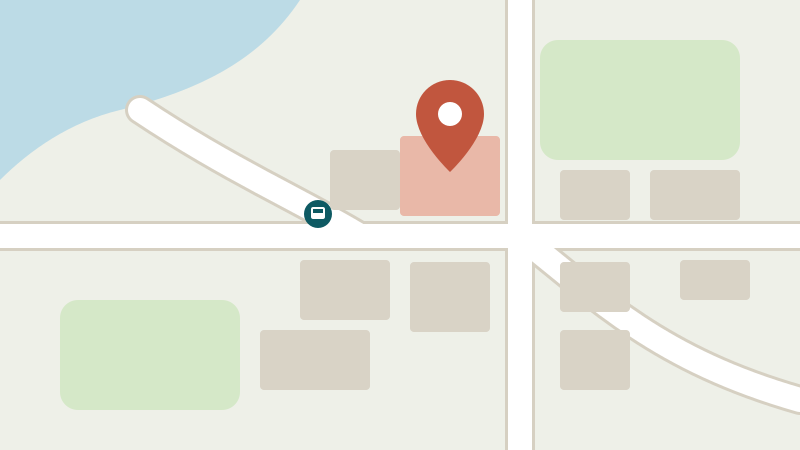

Orari d’apertura
Orari dell’amministrazione comunale, del magazzino comunale e della biblioteca.
Amministrazione comunale
| Giorno | Mattina | Pomeriggio |
|---|---|---|
| Lunedì | 08.00–11.30 | 14.00–17.00 |
| Martedì | 08.00–11.30 | 14.00–17.00 |
| Mercoledì | 08.00–11.30 | chiuso |
| Giovedì | 08.00–11.30 | 14.00–18.30 |
| Venerdì | 08.00–11.30 | 14.00–16.00 |
Biblioteca comunale
Biblioteca in Bahnhofstrasse 12, nuovi orari dal 2 novembre 2026:
- Lunedì
- Martedì
- Mercoledì
- Giovedì
- Venerdì
- Sabato
- chiuso
- 15.00–18.00
- 14.00–18.00
- 15.00–19.00
- chiuso
- 09.30–12.00
Ubicazione e accesso

Amministrazione comunale di Musterwil
Dorfstrasse 1
9999 Musterwil
Autobus linea 12 fino alla fermata «Musterwil Dorf».
Domande frequenti
L’amministrazione è aperta tra Natale e Capodanno?
L’amministrazione resta chiusa dal 24 dicembre 2026 al 3 gennaio 2027 compreso.
Posso venire fuori dagli orari d’apertura?
Sì, su appuntamento telefonico.
Orari telefonici
Lu–ve 08.00–11.30 e 14.00–16.00
Telefono 032 000 12 34